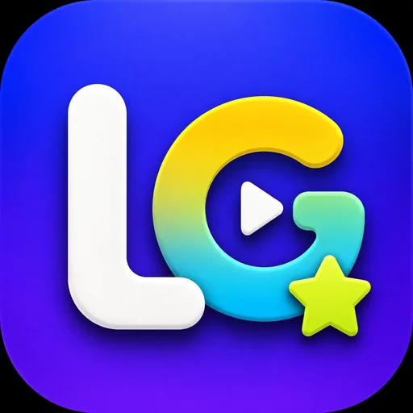

Lexigo
play & remember
背单词最大的敌人是无聊。Lexigo 把它做成一局一局能玩下去的小游戏，赢一局顺手记住几个词。 Boredom kills vocabulary apps. Lexigo turns it into short rounds you'll actually play — and you pick up a few words winning them.
AndroidWeb词汇Vocabulary游戏化Game
功能与页面预览Features & screen previews
内置高考、四六级、考研、雅思、托福和 GRE 等 7 套词库，共 38,416 个词条，也能导入自己的词表。十种练习模式结合 SM-2 间隔复习；识别、回忆、应用三维掌握度帮助找到薄弱环节，错词本可单独组卷复习。学习进度可以导出备份。Study from seven built-in decks for major exams, with 38,416 entries in total, or import your own word list. Ten practice modes work with SM-2 spaced review. Recognition, recall and usage scores surface weak spots, while a dedicated error list supports focused review. Progress can be exported as a backup.
主要页面示意Main page concepts